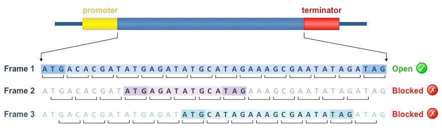
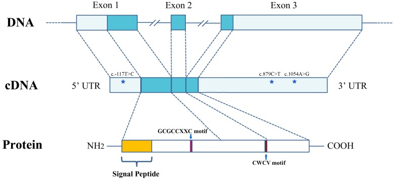
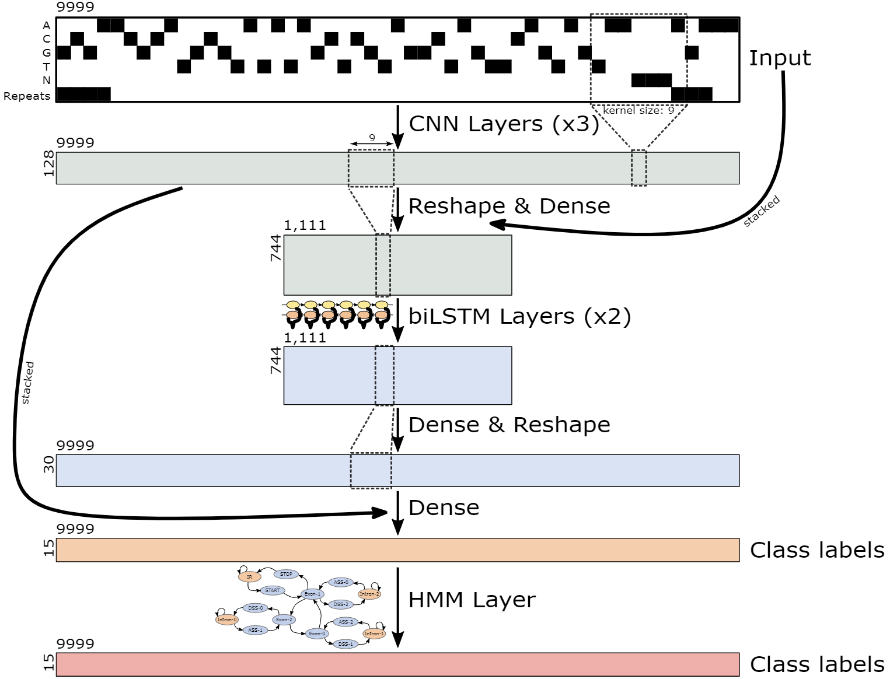
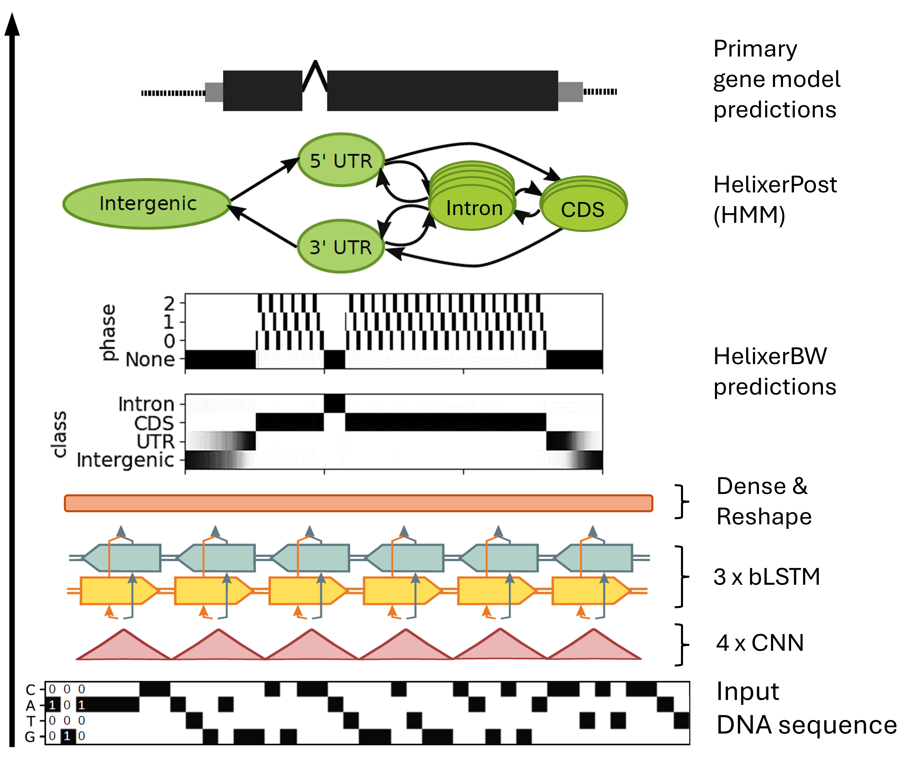
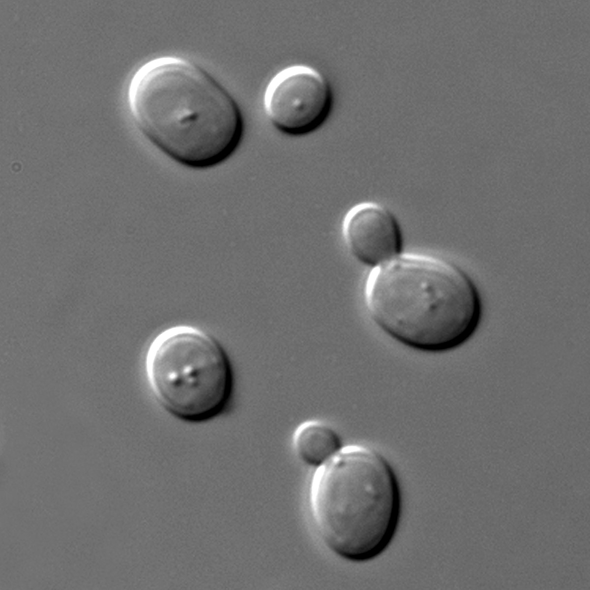

Gene Prediction
Данные
Сегодня будем всячески аннотировать хромосому непатогенного гриба Fusarium oxysporum Fo47.
Файл chr_fo47.fasta
Перед идентификацией генов поговорим о чём помельче…
Repeats and transposons
Repeats and transposons
Повторы могут мешать при аннотации генома, пораждая ложные гены и открытые рамки.
Поэтому мы их замаскируем - поменяем на NNNNN
RepeatMasker
На основе известных последовательностей
Самый простой способ:
RepeatMasker <fasta-file>или (смотря откуда скачивали)
repeatmasker <fasta-file>--xsmall для softmasking
- Удалит и малые РНК - осторожно!
- Можно использовать базу Dfam цкликом (8.9Gb)
- Предсказывать транспозоны ab initio: Repeatmodeler
tRNA
tRNAScan-SE
trnascan-se -E <input fasta> -o <output>или (смотря откуда вы скачивали)
tRNAscan-SE -E <input fasta> -o <output>-E - обозначает поиск эукариотических тРНК
tRNA
tRNAScan-SE
-E : search for eukaryotic tRNAs (default)
-B : search for bacterial tRNAs
-A : search for archaeal tRNAs
-M <model> : search for mitochondrial tRNAs
options: mammal, vert
-O : search for other organellar tRNAs
-G : use general tRNA model (cytoslic tRNAs from all 3 domains included)rRNA
barrnap
barrnap --kingdom euk <fasta file>--kingdom euk - чтобы искать 28S, 18S, 5.8S, 5S
--kingdom [X] Kingdom: euk, bac, arc, mito (default ‘bac’)
RNA from Rfam via HMMER3
wget https://ftp.ebi.ac.uk/pub/databases/Rfam/CURRENT/Rfam.seed.gz
gunzip -k Rfam.seed.gz
hmmbuild Rfam.seed.hmm Rfam.seed
hmmpress Rfam.seed.hmm
nhmmscan --tblout rnas_result.txt Rfam.seed.hmm <fasta file> Кстати, Rfam.seed - не FASTA!
Подбираемся к белок-кодирующим генам
Open reading frame
Open reading frame

Самое простое представление гена (но неверное):
Последовательность триплетов от старт- до стоп-кодона
NCBI online tool
Utilities from EMBOSS:
getorf
getorf -sequence <inputfile> -outseq <outputfile>Longest ORF (3 штуки):
seqkit fx2tab --length <orf fasta file> | \
sort -t $'\t' -k4,4nr | \
head -n 3 | seqkit tab2fx > longest_orf.fastaORF - не ген, а просто открытая рамка, которая может найтись даже случано
Не учитывает интроны в ДНК (плох для эукариот)
Важно выбрать специфический генетический код
Можно использовать для мРНК (нет интронов, но проблемы с UTR)
Coding sequence (CDS)
Coding sequence (CDS)
Отражает кодирующие области гена (экзоны без UTR) и альтреанативный сплайсинг.
Coding sequence (CDS)
Отражает кодирующие области гена (экзоны без UTR) и альтреанативный сплайсинг.

(Синие области - CDS)
GeneMark
Семейство программ для разметки генов.
GeneMark.hmm
- GeneMark-S2 - self-training и только прокариоты, археи
Все версии ТУТ, включая новейшие standalone версии
Важно выбрать модель организма наиболее близкого к вашему
Augustus
augustus \
--protein=on \ # предсказать кодируемые белки
--hintsfile=<gff-file> \ # "подсказки"-гены
--genemodel=complete \ # только полные гены
--species=human \ # надо выбрать species!
fasta.file > output.gffСписок параметров и доступных species: документация
Готовые подсказки - это gff-файл, где часть структур уже размечено (optional)
--genemodel по умолчанию partial - находит даже частичные гены
Augustus
Если вашего species нету, то можно обучить Augustus, используя известные гены родственного организма. Например, из ENSEMBL или даже с сайта Augustus
Augustus
Содержит в себе много полезных скриптов, например
getAnnoFasta.pl <augustus.gff>создает FASTA с предсказанными Augustus белками
BUSCO
Benchmarking Universal Single-Copy Orthologs - база данных с говорящим названием. Чаще используется для оценки “полноты” полного генома
-m - можно указать protein - аннотация будет по протеому - тогда для -i надо указать fasta с белками
Работает только с VPN или локально скачанными базами lineage
BUSCO
При первых запусках новые lineage будут скачиваться локально. Но этого не проивойдет без VPN… Для запуска оффлайн нужно скачать нужные базы и положить их в директорию опеределнным образом:
busco_downloads/
├── file_versions.tsv
└── lineages
├── ascomycota_odb10
├── fungi_odb10
└── hypocreales_odb10базы odb надо скачать… с VPN… отсюда или попросить у товарища
BUSCO
Запускаем оффлайн
busco -i <fasta file> \
-m genome \
-l <lineage> \
--offline \
--download_path <path/to/directory> \
--cpu 8 \
-o <output directory>Скачанный lineage лучше указывать не как fusarium, а как fusarium_odb10 - то есть навзание папки, так как версии lineage могут отличаться.
BUSCO
Benchmarking Universal Single-Copy Orthologs
busco -i <fasta file> \
-m <genome/protein> \
--auto-lineage \ # если не уверены какой lineage
--cpu 8 \
-o <output directory>Но это не панацея - он ошибается
--auto-lineage-euk- среди эукариот--auto-lineage-prok- среди прокариот
BUSCO output
Пусть команда была:
busco -i chr_fo47.fasta -l fungi_odb10 --offline \
--download_path busco_downloads \
-m genome -o busco_output_fungiПапка busco_output_fungi/run_fungi_odb10/:
busco_output_fungi/run_fungi_odb10/
├── busco_sequences
├── full_table.tsv
├── hmmer_output
├── miniprot_output
├── missing_busco_list.tsv
├── short_summary.json
└── short_summary.txtBUSCO output
Папка busco_output_fungi/run_fungi_odb10/:
busco_output_fungi/run_fungi_odb10/
├── busco_sequences
├── full_table.tsv
├── hmmer_output
├── miniprot_output
├── missing_busco_list.tsv
├── short_summary.json
└── short_summary.txtИнтереснее всего в full_table.tsv - тут аннотация генов и short_summary.txt - тут общая статистика и completeness
BUSCO output
Интереснее всего в full_table.tsv - тут аннотация генов и short_summary.txt - тут общая статистика и completeness
Пример одной и строчек short_summary.txt:
C:11.2%[S:11.2%,D:0.0%],F:0.4%,M:88.4%,n:758,E:11.8%- C:11.2% - completeness
- [S:11.2%,D:0.0%] - однокопийных 11.2% и 0% дупликатов
- F:0.4% - Fragmented
- M:88.4% - Missed
Deep Learning approaches
Deep Learning approaches
Используют нейронные сети (обычно свёрточные) и машинное обучение для предсказания
Tiberius
Helixer
Deep Learning approaches
Tiberius

Helixer

Homework
Аннотировать хромосомы пивных дрожжей
